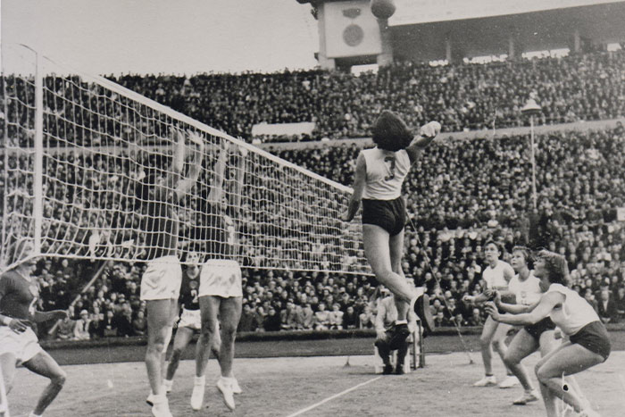
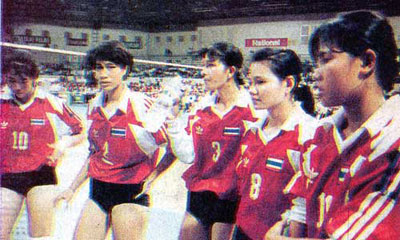
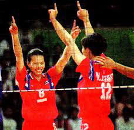
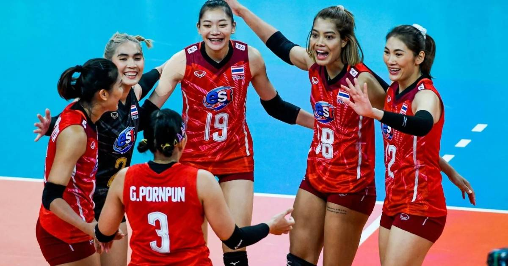

ประวัติของกีฬาวอลเลย์บอล

ในปี พ.ศ. 2476
กรมพลศึกษาเห็นว่าวอลเลย์บอลเป็นกีฬาที่นักเรียนทั้งหญิงและชาย
สามารถเล่นได้ จึงได้จัดให้สอนวิชานี้ขึ้นในสถาบันพลศึกษา
ในปี พ.ศ. 2477 กรมพลศึกษาได้จัดพิมพ์กติกาวอลเลย์บอลขึ้น โดยอาจารย์ นพคุณ พงษ์สุวรรณ
เป็นผู้แปลและท่านเป็นผู้ที่มีความเชี่ยวชาญในกีฬาวอลเลย์บอลจึงได้รับการเชิญให้เป็นผู้บรรยาย
เกี่ยวกับเทคนิควิธีเล่น ตลอดจนกติกาการแข่งขันแก่ครูพลศึกษาทั่วประเทศ ประมาณ 100 คน
ในโอกาสที่กระทรวงศึกษาธิการเป็นผู้จัดการอบรมขึ้น และในปีนี้เอง
กรมพลศึกษาได้จัดให้มีการแข่งขันกีฬาประจำปีขึ้น
และบรรจุกีฬาวอลเลย์บอลหญิงไว้ในการแข่งขันเป็นครั้งแรก
พร้อมบรรจุไว้ในหลักสูตรของโรงเรียนพลศึกษากลางและกำหนดเป็นวิชาบังคับให้นักเรียนหญิงเรียนวิชาวอลเลย์บอลและเนตบอลในสมัยของนาวาเอกหลวงศุภชลาศัย
ดำรงตำแหน่งอธิบดีกรมพลศึกษา อย่างไรก็ตามการแข่งขันวอลเลย์บอลในสมัยนั้นไม่ค่อยเป็นที่นิยมมากนัก
นักกีฬาต่างก็เล่นกันไปเพียงไม่ให้ผิดกติกาจึงทำให้การเล่นวอลเลย์บอลเสื่อมความนิยมไป
แต่ยังคงมีการแข่งขันอยู่บ้างเป็นครั้งคราว
วิวัฒนาการวอลเลย์บอลไทย

วิวัฒนาการวอลเลย์บอลไทย
เริ่มต้นอย่างจริงจังจากการที่ประเทศไทยได้ริเริ่มและรับเป็นเจ้าภาพการแข่งขันกีฬาแหลมทอง
(Southeast Asian Peninsular Games – SEAP Games หรือเซียพเกมส์) ครั้งที่ 1 ณ กรุงเทพมหานคร ในปี
พ.ศ. 2502 คณะกรรมการจัดการแข่งขัน กีฬาเซียพเกมส์ได้เลือกกีฬาวอลเลย์บอล (ประเภททีมชาย)
เป็นหนึ่งในชนิดกีฬาที่แข่งขัน แต่ประเทศไทยยังไม่มีสมาคมกีฬาวอลเลย์บอลมารับผิดชอบ
จึงจำเป็นต้องมีองค์กรระดับชาติที่สมาพันธ์วอลเลย์บอลเอเชียรับรองและต้องเป็นสมาชิกของสมาพันธ์วอลเลย์บอลเอเชีย
และจะเป็นสมาชิกของสหพันธ์วอลเลย์บอลนานาชาติโดยอัตโนมัติ เพื่อให้ถูกต้องตามกฎข้อบังคับฯ
อาจารย์แมน พลพยุหคีรี ซึ่งรู้จักกับบุคลากรในกรมพลศึกษามาก เป็นตัวหลักในการจัดตั้งสมาคม
จึงได้ชักชวนคณะบุคคล รวม 7 คน ร่วมกันจัดตั้งสมาคมขึ้น ประกอบด้วย พลเอก สุรจิต จารุเศรณี นายกอง
วิสุทธารมณ์ นายสวัสดิ์ เลขยานนท์ นายเสรี ไตรรัตน์ นายนิคม พลสุวรรณ นายแมน พลพยุหคีรี และนายเฉลิม
บุณยะสุนทร โดยในวันที่ 1 พฤศจิกายน พ.ศ. 2500
ได้ร่วมประชุมหารือเกี่ยวกับการดำเนินงานจัดตั้งสมาคมและพิจารณาร่างข้อบังคับของสมาคมขึ้น นายกอง
วิสุทธารมณ์ได้รับมอบหมายจากที่ประชุมให้เป็นผู้แทนดำเนินการ
ได้ติดต่อขออนุญาตจากสภาวัฒนธรรมแห่งชาติ กระทรวงศึกษาธิการ และได้รับอนุญาตให้เป็น
สมาคมวอลเลย์บอลสมัครเล่นแห่งประเทศไทย (อังกฤษ: Amateur Volleyball Association of Thailand)
ตามคำสั่งของสภาวัฒนธรรมแห่งชาติที่ ต.11/2502 ลงวันที่ 11 กุมภาพันธ์ พ.ศ. 2502 โดยมี นายนาค
เทพหัสดิน ณ อยุธยา ปลัดกระทรวงศึกษาธิการ เป็นผู้ลงนามในใบอนุญาตจัดตั้งสมาคมฯ
และได้จดทะเบียนสมาคมที่กรมตำรวจ กระทรวงมหาดไทยอย่างเป็นทางการ เมื่อวันที่ 28 กรกฎาคม พ.ศ. 2502
โดยมีวัตถุประสงคเพื่อสนับสนุนและเผยแพร่กีฬาวอลเลย์บอลให้เจริญรุดหน้า
และดำเนินการจัดการแข่งขันวอลเลย์บอลในระบบ 6 คน
วิวัฒนาการวอลเลย์บอลไทย ช่วง 25 ปีแรก

ตั้งแต่ประเทศไทยเข้าร่วมการแข่งขันวอลเลย์บอลระดับนานาชาติเป็นครั้งแรก ในการแข่งขันกีฬาแหลมทอง
(เซียพเกมส์) ครั้งที่ 1 เมื่อปี 2502 จนถึงครั้งที่ 8
ทีมชายได้เหรียญทองเพียงครั้งเดียวในการแข่งขันครั้งที่ 1 แต่ยังได้เหรียญเงินและทองแดง ทุกครั้ง
ยกเว้นครั้งที่ 5 ที่ไม่ได้ส่งแข่ง และครั้งที่ 7 ที่ไม่ได้เหรียญใดเลย
ส่วนทีมหญิงมีโอกาสได้เหรียญทองในการแข่งขันครั้งที่ 4 และ 8 ซึ่งจัดการแข่งขันที่กรุงเทพฯ
และในการแข่งขันครั้งอื่นๆ ได้เหรียญเงิน หรือทองแดงทุกครั้งเมื่อเปลี่ยนชื่อการแข่งขันจาก
เซียพเกมส์ เป็น ซีเกมส์ (Southeast Asian Games) ในการแข่งขันครั้งที่ 9 ทีม วอลเลย์บอล ชาย-หญิง
ยังคงได้หรียญทองแดงส่วนในการแข่งขันเอเชี่ยนเกมส์ที่ประเทศไทยเป็นเจ้าภาพทั้ง 3 ครั้ง คือ ครั้งที่
5 ปี 2509 ครั้งที่ 6 ปี 2513 และ ครั้งที่ 8 ปี 2521
ทีมวอลเลย์บอลไม่ประสบผลสำเร็จเพียงเข้าร่วมการแข่งขันในฐานะเจ้าภาพเท่านั้น
ทีมวอลเลย์บอลไทยประสบภาวะตกต่ำไม่ได้เหรียญใด ๆ เลย ถึง 3 ครั้งติดต่อกัน ตั้งแต่กีฬาซีเกมส์
ครั้งที่ 10 – 12 ประกอบกับมีปัญหาด้านการบริหารสมาคม
ทำให้เกิดความคิดที่จะเปลี่ยนแปลงคณะกรรมการบริหารใหม่ โดยได้เรียนเชิญ นายพิศาล มูลศาสตรสาทร
ปลัดกระทรวงมหาดไทย ในขณะนั้นเข้ารับตำแหน่งนายกสมาคมฯ
ประวัติวอลเลย์บอลไทย จากอดีตสู่ปัจจุบัน แนวคิดการพัฒนาสู่ระดับโลกของทีมวอลเลย์บอลไทย

จากการเริ่มเข้าแข่งขันระดับนานาชาติ สมาคมฯ ต้องใช้ความอดทนเป็นอย่างมาก
เพราะเมื่อเริ่มเข้าร่วมแข่งนานาชาติใหม่ ๆ ทีมไทยอยู่อันดับ 10 กว่า เกือบท้ายๆ ของเอเซีย
ในกีฬาซีเกมส์สู้อินโดนีเซียกับฟิลิปปินส์ไม่ได้ ต้องใช้เวลาไล่ตามถึง 7 ปี
จนกระทั่งชนะได้อย่างถาวรจนถึงปัจจุบัน
สมาคมฯ ใช้เวลา 14 ปี ไล่ตามไต้หวัน ซึ่งในสมัยนั้นถือว่าเป็นเสือตัวที่ 4 ของเอเซีย
ขณะนี้ทีมไทยมีโอกาสชนะมากกว่าแพ้ และในปัจจุบันทีมไทยกำลังไล่ทันเกาหลี
ซึ่งถึงแม้ว่าจะแพ้มากกว่าชนะ แต่ถึงปัจจุบันเกือบจะไม่ได้ต่างกันแล้ว
ขึ้นอยู่กับจังหวะในการเล่นเท่านั้นเอง ทีมต่อไปที่อยากชนะให้มากขึ้นก็คือญี่ปุ่น
ในขณะนี้เริ่มโอกาสที่จะชนะทีมญี่ปุ่นได้บ้างแล้ว แต่ว่ายังไม่มากครั้งนัก
ซึ่งคงต้องการพัฒนาต่อไปอีกถึงแม้ว่าการได้แชมป์เอเชียหญิงในปี 2552
จะดูเหมือนกับไทยเดินทางมาสู่จุดสูงสุดแล้วก็ตาม
ในการพัฒนาทีมต้องยอมรับว่า การพัฒนาทีมชายค่อนข้างยาก อาจจะอยู่ในอันดับ 4 – 8 ของเอเซีย
ถ้าจะก้าวมากไปกว่านั้น จำเป็นที่จะต้องหาผู้เล่นใหม่ที่มีความสูงไม่น้อยกว่า 1.85 เมตร
แต่ว่าส่วนใหญ่ของทีมต้อง 1.90 เมตรขึ้นไป เพื่อสู้กับคน 2 เมตรได้ จึงจะอยู่ระดับต้นๆ
ของเอเชียอย่างถาวร ซึ่งคงต้องสร้างนักกีฬาประเภทนี้เพิ่มขึ้นเป็นพิเศษ
ด้านทีมวอลเลย์บอลชายหาด ทีมหญิงจัดอยู่ในระดับต้นๆ ของเอเชียแล้ว ถ้าจะก้าวสู่ระดับโลก
ก็ต้องหาผู้เล่นที่สูงไม่น้อยกว่า 1.75 เมตร มาสร้างให้แข็งแรง จึงจะมีโอกาสก้าวหน้าไปได้
ส่วนทีมชายก็พัฒนาได้ลำบากเหมือนกับทีมหญิง
ปัจจุบันในเอเซีย นอกจาก จีน เกาหลี ญี่ปุ่น แล้ว
ประเทศไทยก็เป็นที่ยอมรับของนานาประเทศเช่นเดียวกัน